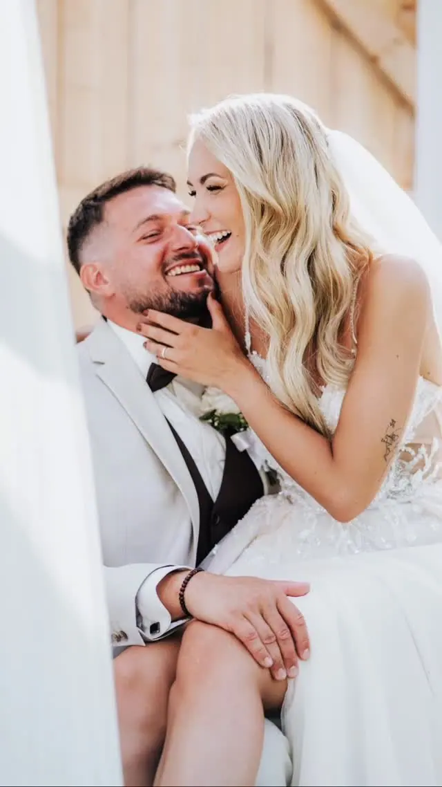
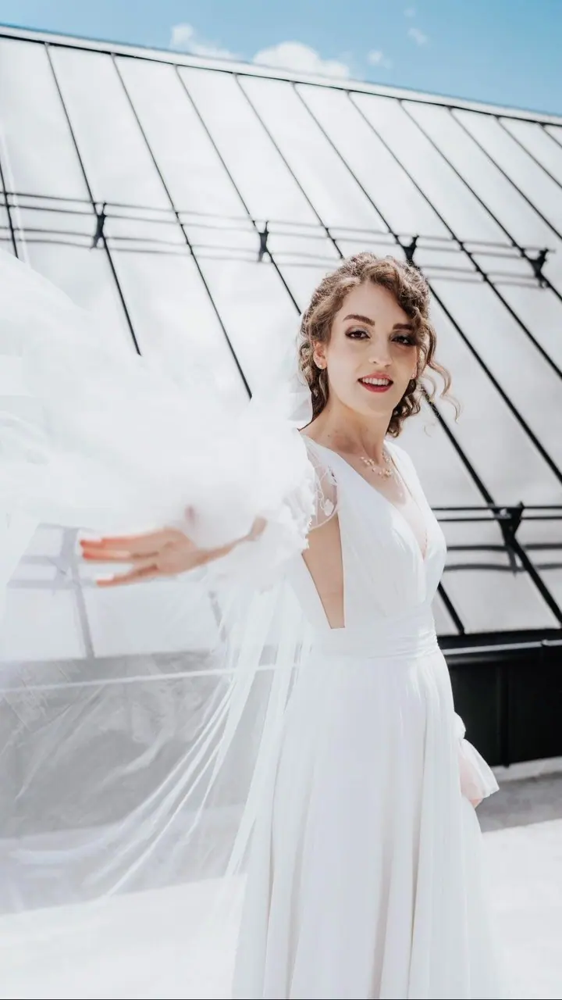
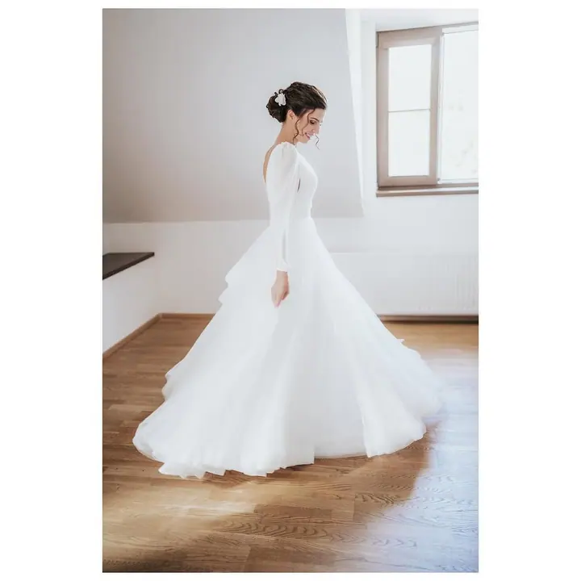
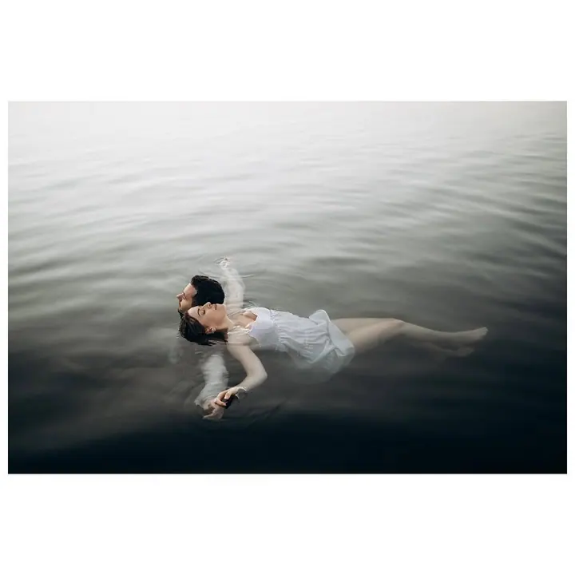
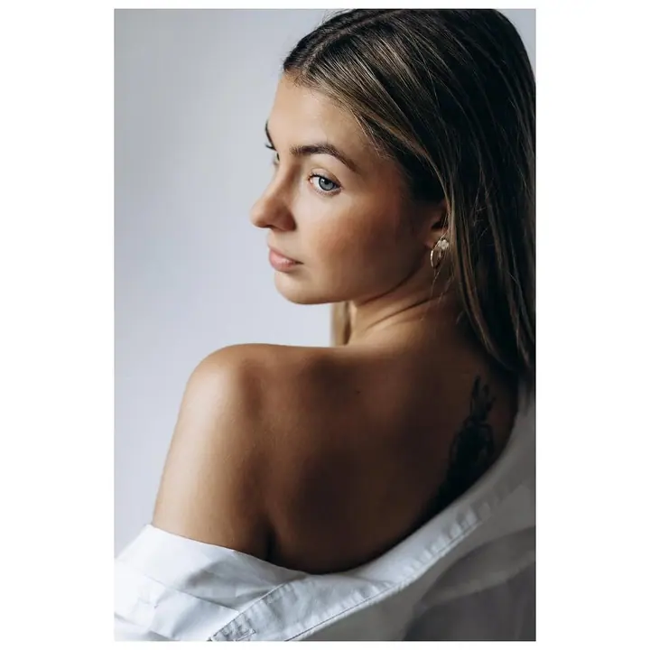
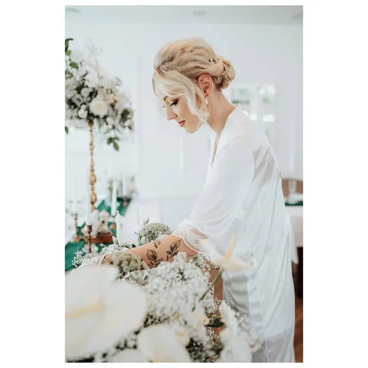

Svatební focení
Fotím celý den od ranních příprav, aby vznikla ucelená reportáž, ve které nic důležitého nechybí. Jsem nenápadný a k hotovým fotkám přidávám i menší výběr černobílých.





Jmenuji se Adam Živnůstka a jsem muzikálový herec z povolání. Když zrovna nestojím na jevišti, běhám s foťákem po svatbách, portrétech a rodinných focení, převážně v okolí Ostravy.
Více o mně
„Zakládám si na důvěře a na milém vystupování.“
— Adam Živnůstka
Fotím celý den od ranních příprav, aby vznikla ucelená reportáž, ve které nic důležitého nechybí. Jsem nenápadný a k hotovým fotkám přidávám i menší výběr černobílých.
Klidné focení, při kterém se nemusíte cítit před objektivem nesvá ani nesví. Za 1,5 hodiny máte 20 až 30 upravených portrétů.
Společné chvíle s rodinou nebo s partnerem, bez stresu a s dobrou náladou. Z kratšího focení dostanete zhruba 50 fotografií.
Fotím akce, divadelní představení i koncerty, prostředí jeviště dobře znám. Na domluvu fotím i produkty.
Jmenuji se Adam a jsem muzikálový herec z povolání. A když zrovna nestojím na divadelních prknech, schovávám se za fotokrabičku. Ve fotografii jsem našel další způsob seberealizace. Je to kreativní práce, a když se dělá s radostí, radost i přináší, stejně jako divadlo.
Zakládám si na důvěře a na milém vystupování. Chtěl bych, aby z každého focení byla příjemná událost, na kterou budou všichni rádi vzpomínat. Na svatbě se snažím být co nejnenápadnější, aby mi neušla žádná emoce, ale zároveň se bavím s hosty, aby se cítili pohodlně, i když na ně zrovna míří objektiv.
Působím převážně v Moravskoslezském kraji v okolí Ostravy, ale po dohodě dojedu kamkoli.
Nejdřív zjistíme, jestli nám sedí datum. Když to klapne, domluvíme se na dalším postupu.
Trochu se poznáme a probereme vaše představy. Rád vám poradím i s harmonogramem dne a můžu se domluvit se svědky, aby nebylo všechno jen na vás.
Jsem s vámi ideálně už od rána, zachytím místo, detaily i přípravy nevěsty a ženicha. Párové focení nám zabere asi hodinku a dá se rozdělit do kratších úseků.
Fotky dodávám do 6 týdnů na cloudovém úložišti. Mezitím vám posílám ukázky, které můžeme spolu ještě doladit.
Balíčky začínají na 10 000 Kč za 6 hodin focení (cca 200 až 250 fotek). Celodenní focení stojí 18 000 Kč a jeho součástí je i 30minutové předsvatební focení.
Do 6 týdnů na cloudovém úložišti. Průběžně vám posílám ukázky upravených fotek, abychom mohli výsledek ještě společně doladit.
Kvůli tomu si nemusíte kazit radost. I v dešti uděláme pár hezkých fotek s trochu jinou atmosférou a můžeme se domluvit i na posvatebním focení v jiný den a za slunečného počasí.
Doprava po Ostravě a okolí je v ceně. Při větší vzdálenosti připočítávám 7 Kč/km.
Mám je zálohované minimálně 3 roky na dvou externích discích a 1 rok na cloudu, takže je od mě dostanete zpátky.
adam.zivnustka@gmail.com
Ostrava a okolí · Moravskoslezský kraj · po dohodě kamkoli